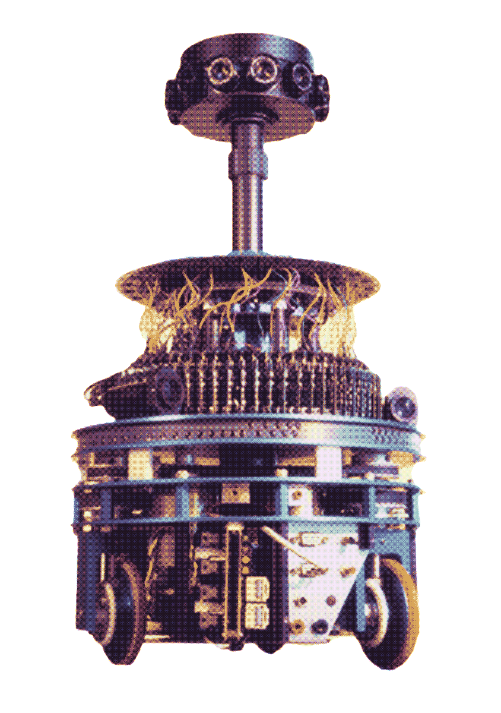

Nicolas Franceschini a cherché toute sa carrière à comprendre comment les MOUCHES voient le monde. L’objectif était tout d’abord de décrypter le système visuel de la mouche et après plus de 20 ans, le Robot fly est né.
Ce projet de robotique entomologique s’est inspiré de l'œil à facettes panoramique de la mouche composé de pixels.
La machine peut détecter les obstacles et les éviter tout comme une mouche en plein vol le ferait.
Une prouesse technologique remarquable pour l'époque, rendue possible uniquement grâce à l'observation du vivant.
